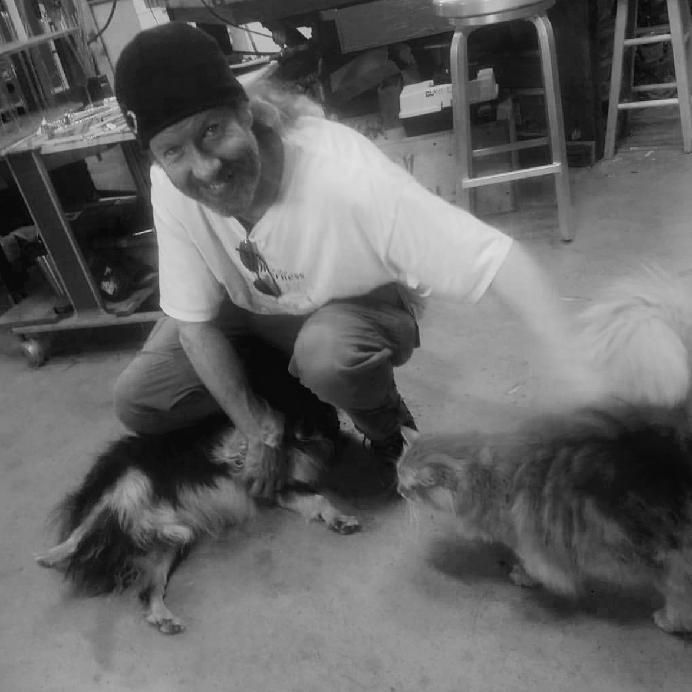
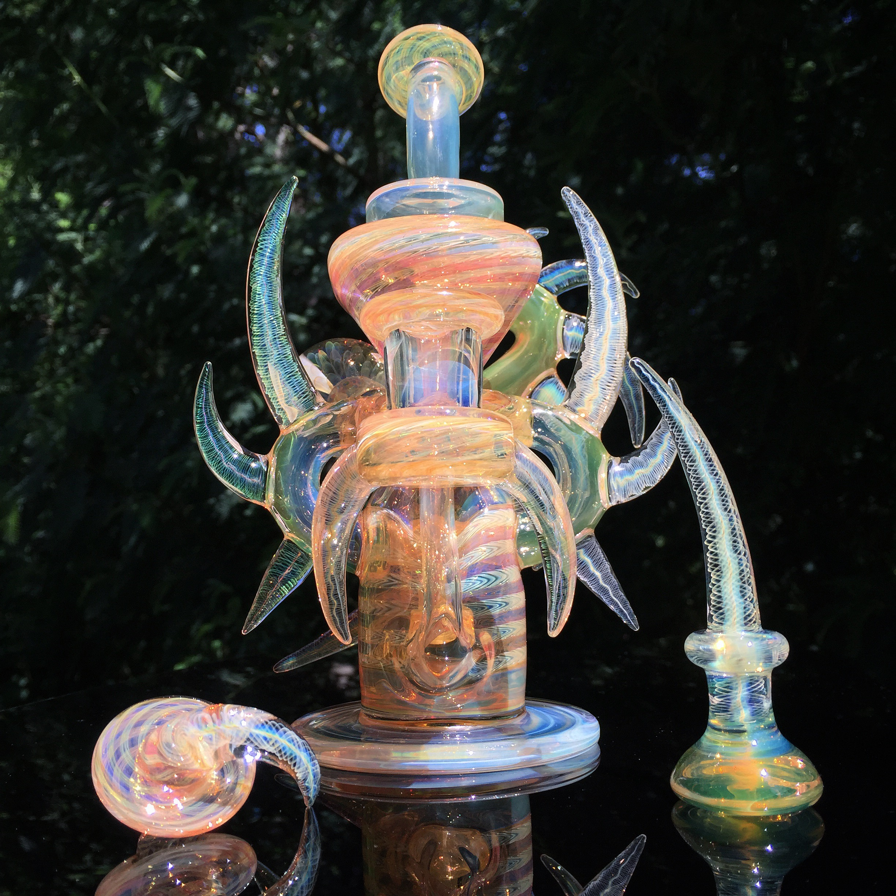
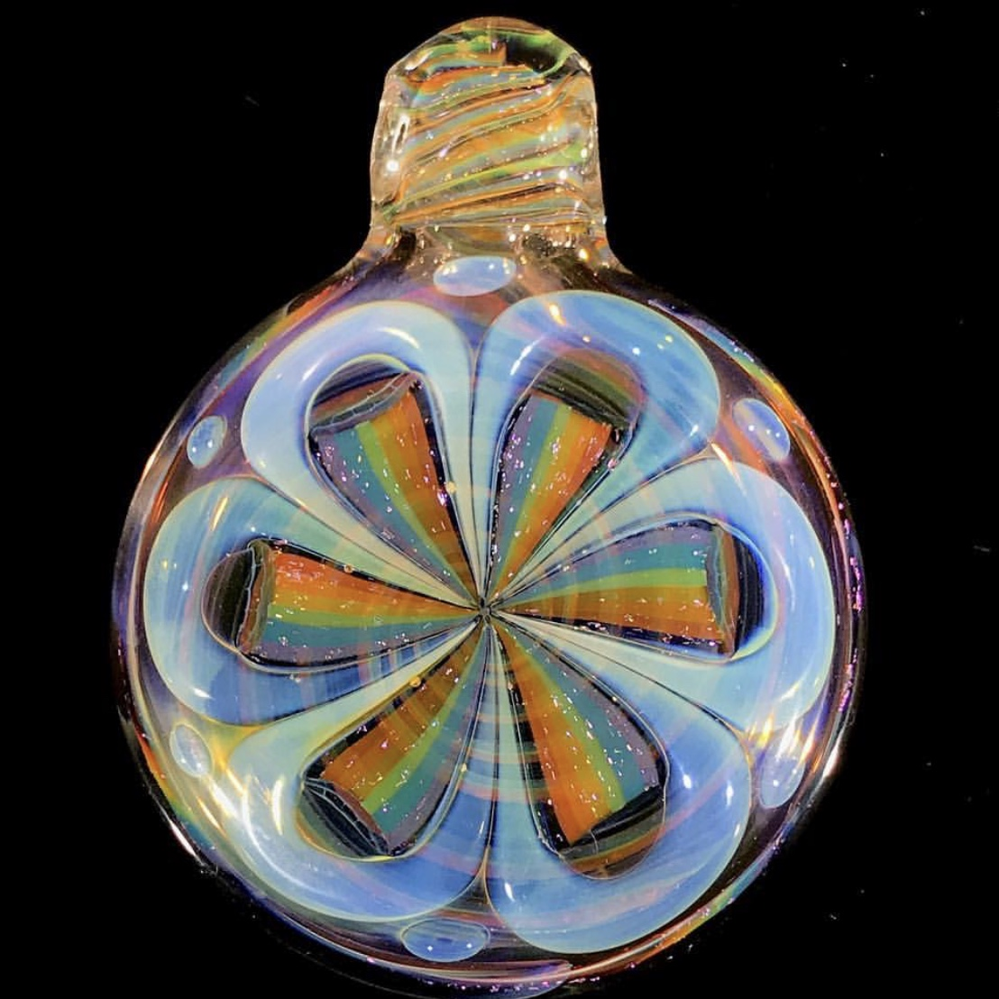

Gallery

Good Morning Mushrooms plans
on expanding and offering classes as soon as possible, please
contact Kevin
with any questions/ inquiries, or to get on the list of deliveries. Soon Good
Morning Mushrooms will be in the local Farmer's Market(s), so stay tuned, we're just
getting started! Good Morning Mushrooms is run by Kevin Nail. His day job is
actually making glass art- you can see his work at
www.kevinnail.com and on



